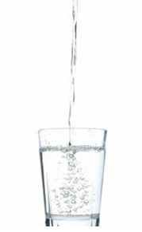

Para este sencillo experimento necesitarás los siguientes materiales:
- Un vaso de cristal.
- Agua mineral con gas (o en su defecto agua y una aspirina efervescente o similar como vitaminas)
- Una pasa pequeña.

Procedimiento:
Introduce la pasa seca en el vaso con agua mineral con gas (o con agua en la que previamente has disuelto una aspirina efervescente o similar).
Podrás observar que al principio la pasa, debido a su propio peso se va hacia el fondo. Pero al poco tiempo observa como sube a la superficie para volver a bajar.
¡Arriba y abajo! como un auténtico yo-yo.
Explicación: